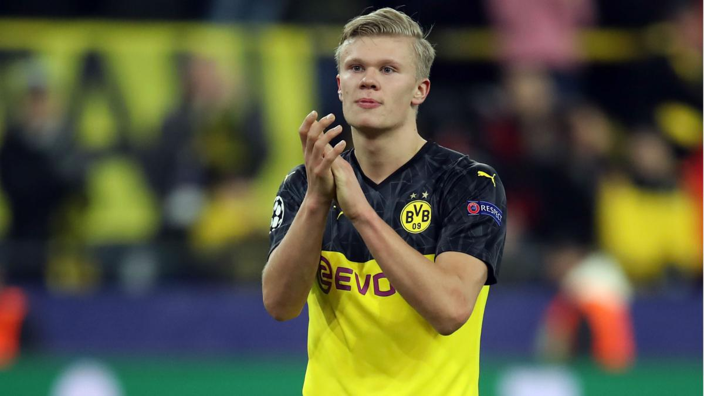

Eagle sports sunday editon
Haland and net.
man united keeps looking for lwandowsky.
Mouriniho suffers a blow from his studenta Lampard!
Klopp replies to a entusiastic kid!
Is Halland the new Ronaldo
Haaland started his career at his hometown club Bryne FK in 2016, and moved to Molde FK the next year where he spent two years. In January 2019, Austrian side Red Bull Salzburg signed him on a five-year contract. In the 2019–20 UEFA Champions League, he became the first teenager to score in five consecutive UEFA Champions League matches and the second teenager to score 10 goals in the UEFA Champions League. With Salzburg, he won the Austrian Football Bundesliga and Austrian Cup. On 29 December 2019, Haaland completed a transfer to Borussia Dortmund for a fee reported in the region of €20 million.
Although eligible to play for the England national team, Haaland chose Norway. After the 2019 FIFA U-20 World Cup, in which he won the Golden Boot, Haaland made his debut for the Norway senior team in September 2019.